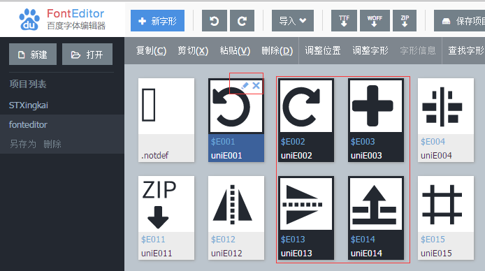

FontEditor简介
FontEditor是一款在线字体编辑器软件， 能够打开本地或者远程的ttf|woff|eot格式的字体文件， 能够导入和导出ttf|woff|eot|svg格式的字体文件， 提供字形的编辑和调整功能，并能实时预览编辑效果。
字形信息
一个ttf字体文件包含多个字形，字形包含以下信息：
- 字形轮廓，多个字形轮廓组成一个字形。
- unicode，unicode码元，一个字形可以对应多个unicode码元，但一个unicode编码只能对应一个字形
- name，字形名称
- leftSideBearing，左边距，字形轮廓左侧的留白
- rightSideBearing，右边距，字形轮廓右侧的留白

字体信息
ttf字体信息包含字体的family,subfamily,version等信息，可以在`设置`->`字体信息`中设置相关的项目。
- fontFamily, 字体家族
- fontSubFamily, 子字体家族
- version，字体版本
- unitsPerEm，em框大小，em框越大字体越精细
- lowestRecPPEM，最小可读尺寸，字体最小可辨认的大小(像素)
字体度量
在字体排版时候需要参考字体度量信息，来放置文字。通过设置上升、下降、行间距来调整文字垂直方向的距离； 设置上标、下标、删除线可以调整上标、下标、删除线的位置和样式； 其他设置请参考[OS/2]。 在`设置`->`字体度量`中设置相关的项目。
新建|打开 ttf字体文件
点击`新建`按钮创建新的ttf文档，点击`打开`按钮打开ttf|woff格式字体文件。
点击`保存项目`按钮，保存当前项目
点击左侧`项目列表`打开保存的项目
点击左侧选中项目中的`另存为`按钮，保存项目副本
点击左侧选中项目中的`删除`按钮，删除当前项目

保存|预览 字体文件
点击`导出ttf`按钮，导出ttf格式文件。
点击`导出woff`按钮，导出woff格式文件。
点击`导出zip`按钮，导出包含ttf|woff|svg|eot文件的压缩包。
点击`预览`按钮，预览当前正在编辑的项目，chrome仅支持预览ttf|woff格式字体，safari支持预览svg字体，IE10+支持预览eot字体。

编辑字形列表
选中字形
在主面板区域显示本字体项目的字形列表，列表上方的工具栏显示可以进行的操作。
字形列表第一个项目为`.notdef`缺失字形，如果排版过程中unicode没有对应的字形，则使用缺失字形替代，因此缺失字形不能够被删除。
点击单个字形可以设置字形的 `选中`、`不选` 状态。

主面板工具栏
在主面板上方的工具栏中可以对选中的字形进行操作。
点击`调整位置`按钮打开调整位置对话框，对字形的左边轴、右边轴、基线偏移进行设置，如果没有选中的字形，则默认操作所有字形。
点击`调整字形`按钮打开调整字形对话框，选中`镜像`， `翻转`，对字形进行`镜像`，`翻转`设置，填写`按比例缩放`对字形按比例进行缩放， 填写`缩放字形到上下边界`对字形调整上下边界（此处设置可以调整字形到统一高度，在字形高度需要调整到一致时可以使用）， 如果没有选中的字形，则默认操作所有字形。
点击`查找字形`按钮，打开查找字形对话框，输入要查找的unicode，则选中找到的字形。
点击`设置代码点`按钮，打开设置代码点对话框， 可以设置代码点为`ascii`或者`unicode private data`的起始代码点， 选中的字形会自动填充unicode代码点和字形名称，如果没有选中的字形，则默认操作所有字形。
颜色为浅绿色的字形为复合字形，FontEditor编辑器暂不支持复合字形的编辑。
编辑字形轮廓
进入编辑轮廓模式
在主面板，鼠标移动到要编辑的字形上面，右上角出现`编辑`图标，点击图标进入字形编辑界面。
在主面板，按`F2`键，打开或关闭轮廓编辑器。

轮廓编辑器
在轮廓编辑器中，字形右侧的蓝线为`rightSideBearing`右边距线，拖动右边距线，设置字形的右边距。
在轮廓编辑器中，上边缘刻度线为水平刻度线，左边缘刻度线为垂直刻度线，刻度线单位为`point`。
在轮廓编辑器中，红色辅助线为测量线，从上到下依次为：
- `ascent`，所有字形的上边缘，原则上字形上边缘不超过`ascent`
- `capHeight`大写H高度
- `xHeight`小写x高度
- `baseline`基线，字形排版的基准线
- `descent`下边缘，所有字形的下边缘，原则上字形下边缘不超过`descent`

编辑字形轮廓
在轮廓编辑器中，点击轮廓选中要编辑的轮廓，按住`ctrl`键选中，不选轮廓。
在轮廓编辑器中，按`delete`键删除选中的轮廓。
在轮廓编辑器中，按`←`，`→`，`↑`，`↓`键左移、右移、上移、下移选中的轮廓。
在轮廓编辑器中，拖动选中的轮廓到指定的位置，拖动过程中出现的绿色线条为对齐线条，会将拖动的轮廓对齐到其他轮廓或`辅助线`。
在轮廓编辑器中，按住`ctrl`+`alt`键，同时拖动轮廓，复制选中的轮廓。
创建辅助线
在轮廓编辑器中，拖动上边缘和左边缘，会拖出水平、垂直参考线以方便对齐。
在轮廓编辑器中，右键空白区域，点击`添加参考线`创建参考线。
在轮廓编辑器中，右键选中的字形，点击`添加边界参考线`创建边界参考线。